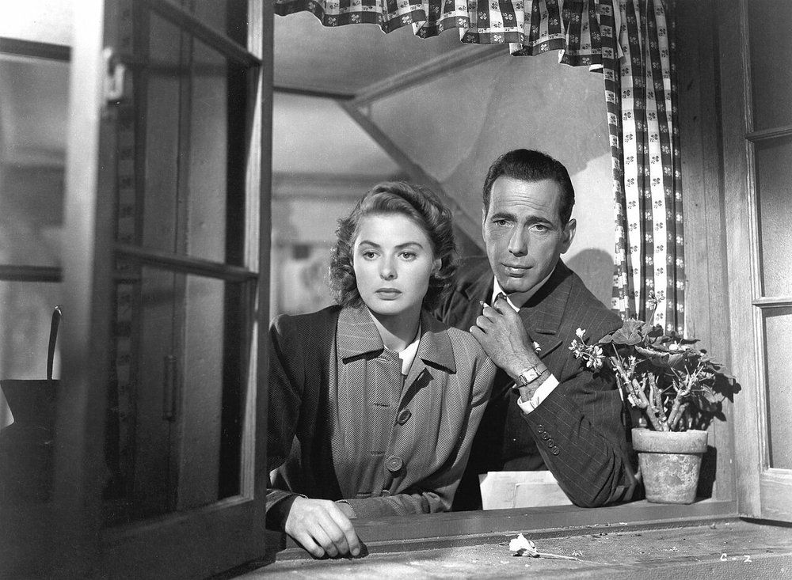

Casablanca, Publicity Still (Ingrid Bergman and Humphrey Bogart)
Michael Curtiz · 1942 · Publicity still, black and white
In copyright. Look and learn: shown for study, not for download.
Casablanca was shot at the Warner Bros. studios in Burbank between 25 May and 3 August 1942, apart from one sequence at Van Nuys Airport. Ingrid Bergman was two inches taller than Humphrey Bogart, and she claimed that Michael Curtiz had him stand on blocks or sit on cushions in their scenes together. The film went $75,000 over budget, for a total cost of $1,039,000. It opened in New York on 26 November 1942.